-
銅トロフィー設定2以上濃厚設定2以上
-
銀トロフィー設定3以上濃厚設定3以上
-
金トロフィー設定4以上濃厚設定4以上
-
キリン柄トロフィー設定5以上濃厚設定5以上
-
虹トロフィー設定6濃厚設定6濃厚
区間別トロフィー詳細出現率（設定6・店長カスタムなし時）
※カスタムなし時は設定6でも8000G回して合算出現率約30%と控えめです。
| 消化G区間 | 銅 | 銀 | 金 | キリン | 虹 | 合算 |
|---|---|---|---|---|---|---|
| 〜1000G | 0.80% | 0.10% | 0.08% | 0.03% | 0.02% | 1.03% |
| 1001〜5000G | 0.50% | 0.08% | 0.04% | 0.02% | 0.01% | 0.65% |
| 5001〜7000G | 0.15% | 0.15% | 0.50% | 0.50% | 0.50% | 1.80% |
| 7001〜8000G | 0.15% | 0.15% | 0.10% | 0.40% | 1.00% | 1.80% |
| 8001G以降 | 0.80% | 0.10% | 0.08% | 0.03% | 0.02% | 1.03% |
※出典：ちょんぼりすた様公開値。7001〜8000Gと8001G以降の出現率はホールの店長カスタム未作動時の基本値です。
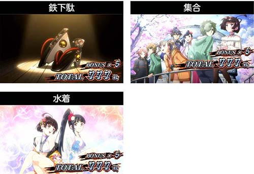
📷 ST終了画面（鉄下駄・集合・水着）実物画像-
鉄下駄デフォルト画面基本
-
集合画面高設定期待度アップ高設定示唆
-
水着画面設定6濃厚画面設定6濃厚
設定6の水着画面 消化ゲーム数別選択率
| 総消化ゲーム数 | 設定6選択率 | 備考 |
|---|---|---|
| 1〜5000G | 0.2% | 出現すれば激レア |
| 5001〜7000G | 5.0% | 出現率アップ |
| 7001〜8000G | 25.0% | 4回に1回出現の超大チャンス |
| 8001G以降 | 0.2% | 通常確率に復帰 |
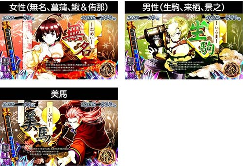
📷 ボーナス中キャラ紹介（女性・男性・美馬）実物画像| キャラ系統 | 示唆内容 | 設定別の傾向 |
|---|---|---|
| 女性キャラ | 偶数設定 期待度UP | 設定2/4/6で約57〜60% |
| 男性キャラ | 設定3・5 期待度UP | 設定3/5で約58〜60% |
| 美馬 | 設定4以上 濃厚 | 7001〜8000Gで10〜15% |
※設定1は男女比がちょうど 50.0% : 50.0% の均等振り分けです。
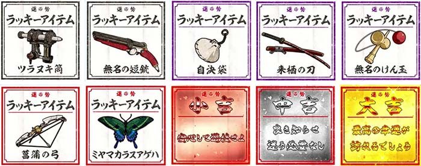
📷 アイテムくじ出現アイテム（大吉・中吉・小吉・武器類）実物画像| 出現アイテム | 示唆内容 |
|---|---|
| 大吉 | 設定6 濃厚 |
| 中吉 | 設定4以上 濃厚 |
| 小吉 | 設定2以上 濃厚（朝イチ回数法則あり） |
| 無名のけん玉 | 設定1・3 否定（設定6で出やすい） |
| 来栖の刀 | 設定2・3 否定（設定6で出やすい） |
| ミヤマカラスアゲハ | 高設定期待度 UP（強） |
| 菖蒲の弓 | 高設定期待度 UP（弱） |
| 自決袋 | 設定1で出現しづらい |
| 無名の短銃 | 設定3で出現しづらい |
| ツラヌキ筒 | 設定4で出現しづらい |
朝イチ1〜5回目の小吉出現法則
・朝イチ2回目: 設定2＆6で出現しやすい
・朝イチ3回目: 設定3＆6で出現しやすい
・朝イチ4回目: 設定4＆6で出現しやすい
・朝イチ5回目: 設定5＆6で出現しやすい
-
おみくじ出現時の「赤発光」エフェクト サブ液晶にくじ出現時、一瞬枠が赤く光るパターン。「朝イチ1〜5回目」や「5の倍数回（5回目、10回目…）」に発生しやすく、大吉・中吉・けん玉・刀・ミヤマカラスアゲハ等の強示唆アイテム選択率が大幅アップ！強示唆大チャンス
-
選択の優先順位（輪廻くじ vs アイテムくじ） サブ液晶では「輪廻くじ（海門Lv示唆）」と「アイテムくじ（設定示唆）」を選択可能。設定狙いの場合は、小吉の回数法則や設定否定アイテムを最速で刈り取るため【朝イチ1〜5回目まではアイテムくじ一択】が鉄則。朝イチはアイテム
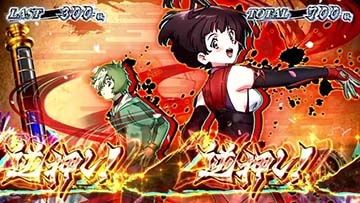
📷 カバネリボーナスの技術介入・目押し画面-
無名「やっぱりこの台普通じゃないね」 上下ランプ＋ストロボ発光設定2以上
-
ボイスなし LED発光なし設定5以上濃厚
-
景之「今年は最後かな」 上下ランプ点灯高設定(強)
-
景之「私は…ヒトか、カバネか!?」 上下ランプ点灯高設定(中)
-
景之「なぜ言わなかった 私をヒトだと!!」 上下ランプ点灯高設定(弱)
-
女性ボイス（基本）上のランプ点灯偶数UP
-
男性ボイス（基本）下のランプ点灯設定3/5 UP
※聞き逃した場合はPUSHボタンまたはサブ液晶タッチで再確認可能です。
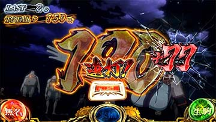
📷 カバネリアタック連打 ＋77枚（設定6濃厚）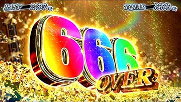
📷 獲得枚数表示 666 OVER（設定6濃厚）| 契機 | 表示 | 示唆内容 |
|---|---|---|
| カバネリアタック連打 | ＋44枚 | 設定4以上 濃厚 |
| カバネリアタック連打 | ＋55枚 | 設定5以上 濃厚 |
| カバネリアタック連打 | ＋66枚 / ＋77枚 | 設定6 濃厚 |
| 獲得枚数表示 | 456 OVER | 設定4以上 濃厚 |
| 獲得枚数表示 | 666 OVER | 設定6 濃厚 |
| 設定 | 真景之ST | 裏景之ST | 突入比率目安 |
|---|---|---|---|
| 設定1 | 93.8% | 6.2% | 約 1/16.1 |
| 設定2 | 93.8% | 6.2% | 約 1/16.1 |
| 設定3 | 93.4% | 6.6% | 約 1/15.2 |
| 設定4 | 89.1% | 10.9% | 約 1/9.2 |
| 設定5 | 75.0% | 25.0% | 1/4 (4回に1回) |
| 設定6 | 66.8% | 33.2% | 1/3 (3回に1回) |
| 設定 | 7撃破 | 8撃破 | 9撃破 |
|---|---|---|---|
| 設定1 | 50.0% | 79.3% | 89.1% |
| 設定2 | 50.0% | 79.3% | 89.1% |
| 設定3 | 50.4% | 79.7% | 89.5% |
| 設定4 | 53.9% | 83.2% | 93.0% |
| 設定5 | 54.7% | 84.0% | 93.8% |
| 設定6 | 55.5% | 84.8% | 94.5% |
※高設定ほど初期規定撃破数が浅い（少ない撃破で成功しやすい）傾向があります。
| 設定区分 | 無名チャンス目 | 生駒チャンス目 | カバネチャンス目 |
|---|---|---|---|
| 推定低設定 | 13.4% (234/1744) | 11.7% (196/1675) | 30.6% (252/823) |
| 設定4以上 | 17.2% (130/754) | 18.2% (131/721) | 31.1% (90/289) |
| 設定5以上 | 20.9% (87/416) | 19.0% (69/363) | 26.7% (20/75) |
| 設定6 | 21.3% (157/737) | 16.3% (122/748) | 33.9% (77/227) |
※高確帯のない通常状態での単独チャンス目成立時に、BETボタンで発光するかどうかの比率です。
いそまる氏（設定6確定実戦・約7,500G）、柊ちさき氏（456確定実戦）の実戦履歴テーブル、設定6大量実戦値（勝率83.6%・平均+3,980枚）、スランプグラフ3大波形パターン、規定カバネpt分布・強制周期移行（150G/300G）、押し引きチェックリストは新設された「実戦データ・設定6挙動」タブに集約しました。
| 比較項目 | 設定1 | 設定4 | 設定6 | 設定6の見極めポイント |
|---|---|---|---|---|
| 実戦勝率 | 約 41.2% | 約 66.8% | 約 83.6% | 終日打ってマイナスで終わるケースは2割未満 |
| 初当りボーナス | 1/254.2 | 1/214.0 | 1/195.1 | 終日通して1/200をキープできるかが第一関門 |
| ST初当り確率 | 1/422.5 | 1/357.2 | 1/318.5 | エピボ直撃と駿城昇格率の高さで圧倒的な軽さに |
| エピボ直撃比率 | 約 40.0% | 約 51.5% | 約 60.7% | 初当たりの過半数がエピソードボーナス直撃 |
| 共通ベル確率 | 1/121.1 | 1/106.2 | 1/99.1 | マイスロで1/102以上なら高設定の期待大 |
| 裏景之ST突入率 | 6.2% | 10.9% | 33.2% | 復讐の焔成功時の約1/3で裏景之へ直行する最強トリガー |
| 波形パターン | 発生頻度目安 | グラフの特徴と推移 | ホール現場での立ち回り・判別アドバイス |
|---|---|---|---|
| ① モミモミ微増から急伸型 （王道パターン） |
約 45% | 午前中は1〜2周期で初当たりを連発するも、STが2〜3連で終わり差枚±0〜+1,000枚を推移。午後から一撃のツラヌキ（景之ST）到達を契機に+4,000〜+6,000枚へ急伸する。 | 最も捨てられやすい罠パターン！ 出玉が伸び悩んでいても「初当たりが1〜2周期で当たっているか」「エピボ比率が高いか」を確認し、粘り腰で続行することが極めて重要。 |
| ② 安定右肩上がり型 （ド安定ギザギザ） |
約 35% | 最大ハマリが300G未満。駿城ボーナスをほぼ引かずエピボ直行、ST駆け抜けが少なく300〜800枚の獲得をコンスタントに刻んで綺麗な45度の右肩上がりを描く。 | 誰が見ても高設定と確信できる鉄板グラフ。追加投資のリスクがほぼなく、閉店間際までぶん回すのが正解。 |
| ③ 朝イチ凹み急浮上型 （V字回復型） |
約 20% | 朝イチにたまたま3〜4周期まで連れて行かれたり、駿城スルーが重なって一時的に-1,000枚前後まで沈む。そこから持ち前の初当たり軽さとツラヌキで怒涛のV字回復。 | 朝イチの凹みだけで見切られた台が後から跳ね上がる典型例。共通ベルやおみくじ、単独チャンス目発光率を複合確認して後ヅモを狙えるポイント。 |
項目・設定5・設定6を並べて比較できます。詳しい判別ポイントは表を右へ横スクロールしてください。
| 比較判別項目 | 設定5（荒波・万枚トリガー型）設定5 | 設定6（看板・ド安定ギザギザ型）設定6 | 判別・看破のポイント |
|---|---|---|---|
| 機械割 | 111.0% | 114.9% | どちらも現行スマスロ屈指の出玉性能 |
| 初当りボーナス | 1/203.2 | 1/195.1 | 設定6はほぼ終日1/200を切るペースで初当たりが連打 |
| ST初当り確率 | 1/332.6 | 1/318.5 | ST当選の軽さ・エピボ直撃率は設定6が頭一つ抜ける |
| 下段共通ベル確率 | 1/104.2 | 1/99.1 | 終日カウントで1/100を切るかどうかが設定6の分水嶺 |
| 裏景之ST突入率 （復讐の焔成功時） |
25.0%（4回に1回） | 33.2%（3回に1回） | 低設定（6.2%）とは絶望的な格差。設定5・6ともに超優遇！ |
| キャラ紹介の偏り | 男性キャラ（生駒・逞生・巣刈） ※奇数示唆が頻出 |
女性キャラ（無名・菖蒲・鰍） ※偶数示唆が頻出 |
カバネリボーナス中のキャラ紹介順で奇遇判別 |
| ボーナス中ボイス | 「ボイスなし（無音）」出現 （設定5以上濃厚！） |
美馬ボイス（高設定示唆強）や無名偶数ボイスが主軸 | 「ボイスなし」は設定5以上のみで発生する超特権示唆！ |
| アタック上乗せ枚数 | 連打中に「+55枚」（設定5以上） | 連打中に「+66枚」「+77枚」（設定6濃厚） | カバネリアタック中のゾロ目表示は見逃し厳禁 |
| スランプ波形の特徴 | 時に400G超の中ハマリを挟みつつ、上位STや裏景之を契機に一撃で3,000〜5,000枚急伸 | 300G未満の小刻みな当たりを連打し、浅い右肩上がりのギザギザを形成 | グラフの「ハマリの深さ」と「初当たりの均一さ」で見極める |
| 周期数 | 到達G数目安 | 設定1 当選率 | 設定4 当選率 | 設定6 当選率 | 設定判別での重要度・挙動考察 |
|---|---|---|---|---|---|
| 第1周期 | 〜 150G (強制天井) | 約 33.0% | 約 44.0% | 約 52.0% | 設定6は半数以上が第1周期でサクッとボーナス当選 |
| 第2周期 | 〜 300G (強制天井) | 約 33.0% | 約 42.0% | 約 48.5% | 1周期目を抜けても2周期目でほぼ捕まる（1〜2周期合算解除率: 約75〜85%） |
| 第3周期 | 〜 450G 前後 | 18.4% | 28.5% | 37.1% (公表値) | 【超重要設定差！】設定1と6で約2.0倍の開き。3周期目到達時に解除できるかが大きな判別ポイント |
| 第4周期 | 〜 600G 前後 | 33.6% | 40.2% | 46.9% (公表値) | 設定6はここまで連れて行かれること自体が終日で1〜2回程度と極めて稀 |
| 第5周期以降 | 600G 超〜 | 存在（頻発） | 極稀 | ほぼ行かない | 終日稼働で5周期以上（600G超）へ複数回連れて行かれたら設定6の可能性は激減 |
| キャラ／ボイス内容 | 示唆内容 | 信頼度・立ち回りへの影響 |
|---|---|---|
| ボイスなし（無音） | 設定5以上濃厚！ | 超激アツ！ 実戦上確認できれば終日ブン回し確定 |
| 無名「やっぱりこの台…普通じゃないね」 | 設定2以上濃厚 | 設定1否定。早い段階で確認できればベースアップ |
| 美馬「弱者は滅び、強者のみが生き残る」 | 高設定示唆（強） | 複数回確認できれば設定4・5・6の期待度が大幅上昇 |
| 生駒「諦めるな、前を向け！」 | 奇数設定示唆 | 設定1・3・5の期待度UP（設定5看破の補助） |
| 無名「もっともっとカバネを倒さなきゃ！」 | 偶数設定示唆 | 設定2・4・6の期待度UP（設定6看破の補助） |
| 演出パターン | 表示内容 | 設定示唆内容 |
|---|---|---|
| 連打上乗せ枚数 | +44枚 表示 | 設定4以上濃厚！ |
| 連打上乗せ枚数 | +55枚 表示 | 設定5以上濃厚！ |
| 連打上乗せ枚数 | +66枚 / +77枚 表示 | 設定6濃厚！ |
| 獲得枚数OVER表示 | 456枚OVER 出現 | 設定4以上濃厚！ |
| 獲得枚数OVER表示 | 666枚OVER 出現 | 設定6濃厚！ |
| G数 | 当選契機 | 周期 | ボーナス種別 | 獲得/結果 | 設定示唆・備考 |
|---|---|---|---|---|---|
| 303G | 規定pt到達 | 2周期 | エピソード | ST突入 (580枚) | 朝イチ投資552枚でヒット。高確スタート確認 |
| 217G | 無名CZ(全撃破) | 1周期 | 駿城ボーナス | ✕（失敗） | 銅藍・無名CZ連続突入 |
| 112G | 規定pt到達 | 1周期 | エピソード | ST突入 (962枚) | 1周期到達での早い解除。終了画面：全員集合（高設定示唆） |
| 78G | 生駒CZ解除 | 1周期 | 駿城ボーナス | ✕ | 終了時ボイス「今年は最後かな（高設定示唆強）」 |
| 145G | 規定pt到達 | 1周期 | エピソード | ST突入 (840枚) | カバネリアタックで「+44枚（設定4以上濃厚）」 |
| 280G | 規定pt到達 | 3周期 | 駿城 ➡ 昇格 | ST昇格！ (1,066枚) | 駿城中チャンス目から昇格、狂気の咆哮 |
| 96G | 規定pt到達 | 1周期 | エピソード | ST突入 (620枚) | 1周期浅い解除。持ちコイン2,500枚突破 |
| 185G | 銅藍CZ解除 | 1周期 | エピソード | ST突入 (980枚) | ボーナス終了画面：美馬紹介（設定4以上濃厚） |
| 310G | 規定pt到達 | 2周期 | エピソード | ST突入 (760枚) | 2周期目での安定解除 |
| 120G | 生駒CZ解除 | 1周期 | 駿城ボーナス | ✕ | おみくじ「中吉（設定4以上濃厚）」出現 |
| 88G | 規定pt到達 | 1周期 | エピソード | ST突入 (1,480枚) | サブ液晶赤発光 ➡ 大吉（設定6濃厚）出現！ |
| 245G | 規定pt到達 | 2周期 | エピソード | ST突入 (680枚) | 終了画面：水着（設定6濃厚）確認 |
| 380G | 規定pt到達 | 4周期 | 駿城ボーナス | ✕ | 本日最大ハマリ。ここ以外は全て1〜2周期で解除 |
| 130G | 無名CZ解除 | 1周期 | エピソード | 完走 (1,623枚) | 9連チャンで有利区間完走 ➡ 上位「景之ST」突入！ |
| … | （1〜2周期連打） | 1〜2 | （エピボ中心） | … | 終盤まで下振れなく5,400枚オーバーへ |
| 最終 | 完走（4,010枚） | - | - | 差枚 ＋4,010枚 | ツラヌキ景之ST突入・完全勝利（総出玉5,448枚） |
| G数 | 契機・CZ | ボーナス種別 | 結果・獲得枚数 | テロップ・示唆演出 |
|---|---|---|---|---|
| 52G | 同時減算 ➡ 銅藍CZ(期待度約78%) | エピソード | ST突入 (450枚) | 朝イチ最速の銅藍CZを突破 |
| 124G | 生駒CZ突入(期待度約46%) | 駿城ボーナス | ✕ (持ちコイン遊技) | 小役連打から即CZ当選 |
| 183G | 無名CZ 突入 | エピソード | ST突入 (680枚) | 連撃からボーナス直撃 |
| 350G | 同時減算 ➡ 銅藍CZ(本日2回目) | エピソード | ST突入 (820枚) | 覚醒中強シェイク(複合チャンス目)から連チャン |
| 95G | 規定pt到達 (1周期) | 駿城ボーナス | ST昇格！ (540枚) | 1周期目での早い解除 |
| 210G | 規定pt到達 (2周期) | エピソード | ST突入 (790枚) | 金トロフィー（設定4以上確定）出現！ |
| 最終 | 投資 874枚 / 回収 1,688枚 | - | 収支 ＋814枚 | 456確の安定挙動で快勝 |
| G数 | 当選契機 | 周期 | ボーナス種別 | 獲得/結果 | 設定示唆・備考 |
|---|---|---|---|---|---|
| 92G | 規定pt到達 | 1周期 | エピソード | ST突入 (480枚) | 朝イチ最速1周期解除。幸先良いスタート |
| 175G | 生駒CZ解除 | 1周期 | エピソード | ST突入 (720枚) | 終了画面：女性集合（偶数示唆） |
| 288G | 規定pt到達 | 2周期 | 駿城ボーナス | ST昇格！ (530枚) | 駿城中チャンス目でST昇格射止め |
| 110G | 無名CZ解除 | 1周期 | エピソード | ST連チャン (1,240枚) | カバネリアタックで「+66枚（設定6濃厚）」出現！ |
| 195G | 銅藍CZ解除 | 1周期 | エピソード | ST突入 (610枚) | 上位CZ「銅藍」出現。前兆短縮確認 |
| 最終 | 約4,200G 稼働 | - | - | 差枚 ＋3,150枚 | 終始ド安定の右肩上がりスランプで設定6の強さを実証 |
| G数 | 当選契機 | 周期 | ボーナス種別 | 獲得/結果 | 示唆・出目検証内容 |
|---|---|---|---|---|---|
| 140G | 規定pt到達 | 1周期 | 駿城ボーナス | ✕ (黒煙蓄積) | BETランプ発光あり（単独チャンス目） |
| 265G | 生駒CZ解除 | 2周期 | 駿城ボーナス | ✕ (黒煙蓄積) | 青7上段停止からのチャンス目停止形解説 |
| 115G | 規定pt到達 | 1周期 | エピソード | ST突入 (390枚) | 黒煙り（中）エフェクト発生確認 |
| 320G | 規定pt到達 | 2周期 | エピボ「復讐の焔」 | 裏景之ST突入！ | 黒煙MAXから裏景之ST直行！(1,850枚獲得) |
| 160G | 銅藍CZ解除 | 1周期 | エピソード | ST突入 (680枚) | おみくじ「中吉（設定4以上濃厚）」出現 |
| 最終 | 約5,500G 稼働 | - | - | 差枚 ＋1,920枚 | 黒煙解放からの上位ツラヌキで逆転勝利 |
| 実戦G数 | 続行・高設定期待サイン（Go!） | ヤメ・低設定警戒サイン（Stop?） |
|---|---|---|
| 1,000G 時点 （初動判断） |
・初当たりが全て1〜2周期以内で解除 ・初当たり2回中1回以上がエピボ直撃 ・共通ベルが 1/105 以上で推移 ・おみくじで「小吉」以上やキャラ紹介で高設定示唆確認 |
・初っ端から3周期（300G超）以上ハマる ・初当たりが駿城ボーナス単発でSTに入らない ・共通ベルが 1/120 を大きく下回る |
| 3,000G 時点 （中盤・勝負所） |
・1〜2周期解除率が 75%以上 をキープ ・エピボ直撃比率が 55%〜60% 前後 ・共通ベルが 1/100 前後 で安定 ・銅藍CZの複数回突入やおみくじ「中吉」「大吉」等の確定演出出現 |
・3周期以上のハマリが複数回連続して発生 ・駿城ボーナス比率が6割以上で追加投資が止まらない ・示唆画面がデフォルト（生駒単独等）ばかり |
| 5,000G 以降 （終盤・ぶん回し） |
・初当り合算が 1/195 前後 を維持 ・トロフィー（金・キリン・虹）や水着画面で確定済み ・出玉が一時的にモミモミしても閉店1時間前までフル稼働！ |
・確定示唆が一切出ず、初当りが 1/240 付近まで失速 ・プラス域に浮上したタイミングで勝ち逃げヤメを検討 |
| 状況 | ゲーム数天井 | 周期天井 | 恩恵 |
|---|---|---|---|
| 通常（下位ST連後） | 996G＋α | 最大6周期 | エピソードボーナス |
| 短縮① 朝イチリセット | 596G＋α | 最大4周期 | エピソードボーナス |
| 短縮② ST駆け抜け後 | 596G＋α | 最大4周期 | エピソードボーナス |
| 短縮③ 景之ST(上位)後 | 596G＋α | 最大4周期 | エピソードボーナス |
-
朝イチ設定変更時 天井596G短縮。実戦値では0Gから100%超60G〜
-
上位ST（景之ST）後 天井596G短縮 ＋ 景之STループ性あり80G〜
-
ST駆け抜け後 天井596G短縮90G〜
-
通常時（下位ST連後） 天井996G570G〜
上位ST突入履歴の見抜き方
| 開始G数 | 初当り確率 | 期待収支(円) | 出玉率 | 時給換算 | 判定 |
|---|---|---|---|---|---|
| 195G〜 | 1/399 | -412円 | 96.5% | -1,659円 | ✕ 不可 |
| 200G〜 | 1/395 | -364円 | 96.9% | -1,508円 | ✕ 不可 |
| 210G〜 | 1/385 | -254円 | 97.7% | -1,119円 | ✕ 不可 |
| 220G〜 | 1/369 | -101円 | 99.0% | -475円 | ✕ 不可 |
| 225G〜 | 1/359 | -8円 | 99.9% | -38円 | △ トントン |
| 230G〜 | 1/350 | +81円 | 100.9% | +409円 | ○ 打てる |
| 240G〜 | 1/330 | +253円 | 102.9% | +1,371円 | ◎ 狙い目 |
| 250G〜 | 1/333 | +196円 | 102.4% | +1,175円 | ◎ 狙い目 |
| 260G〜 | 1/323 | +246円 | 103.4% | +1,637円 | ◎ 狙い目 |
| 270G〜 | 1/297 | +427円 | 106.6% | +3,153円 | ★ 激ウマ |
| 280G〜 | 1/279 | +488円 | 108.6% | +4,135円 | ★ 激ウマ |
💡 液晶表示で「2周期目開始直後」であることが確認できれば、200G未満からでもプラス域になるケースがあります。
| 初期ポイント | 振り分け率 | 累積・状況 |
|---|---|---|
| 5 pt | 39.5% | デフォルト |
| 10 pt | 5.5% | 45.0% |
| 20 pt | 6.2% | 51.2% |
| 25 pt | 7.4% | 58.6% |
| 30 pt | 8.2% | 66.8%（30pt以上が41.4%） |
| 35 pt | 9.4% | 76.2% |
| 40 pt | 10.9% | 40pt以上が約23.8% |
| 45 pt | 12.5% | あと5ptで解放 |
| 50 pt | 0.4% | 初回から裏海門/裏景之解放濃厚 |
-
基本ヤメどきST終了後にCZ高確・前兆なしを確認してヤメ即ヤメ
-
30Gキリ番・おみくじ確認30GのPUSHキャラやおみくじの内容を確認30G確認
-
1周期目確認（最大150G＋α）1周期目のボーナス期待度は52%以上1周期確認
| 設定 | 初当り出現率 | ST突入出現率 | 出玉率(機械割) |
|---|---|---|---|
| 設定1 | 1/254.2 | 1/422.5 | 97.5% |
| 設定2 | 1/242.3 | 1/405.9 | 98.5% |
| 設定3 | 1/239.6 | 1/398.7 | 100.8% |
| 設定4 | 1/214.0 | 1/357.2 | 106.0% |
| 設定5 | 1/203.2 | 1/332.6 | 111.0% |
| 設定6 | 1/195.1 | 1/318.5 | 114.9% |
※初当り・ST突入は通常Gを分母とする出現確率です。 AT純増: 6.0枚/G ｜ 50枚あたり回転数: 約31.4G ｜ コイン単価: 3.1円(設定1)
| 設定 | 下段ベル確率 | 確率分母 |
|---|---|---|
| 設定1 | 1/121.1 | 121.1 |
| 設定2 | 1/114.4 | 114.4 |
| 設定3 | 1/112.8 | 112.8 |
| 設定4 | 1/106.2 | 106.2 |
| 設定5 | 1/104.2 | 104.2 |
| 設定6 | 1/99.1 | 99.1 |
| 設定 | 3周期目期待度 | 4周期目期待度 |
|---|---|---|
| 設定1 | 18.4% | 33.6% |
| 設定2 | 23.8% | 35.2% |
| 設定3 | 21.1% | 36.3% |
| 設定4 | 28.5% | 40.2% |
| 設定5 | 32.4% | 43.4% |
| 設定6 | 37.1% (約2倍) | 46.9% |
| 役名 | 確率 | 備考 |
|---|---|---|
| 無名チャンス目 | 1/38.9 | 単独 |
| 生駒チャンス目 | 1/44.5 | 単独 |
| カバネチャンス目 | 1/77.7 | 単独 |
| 無名＆カバネ チャンス目 | 1/546.1 | 複合 |
| 無名＆生駒 チャンス目 | 1/546.1 | 複合 |
| カバネ＆生駒 チャンス目 | 1/546.1 | 複合 |
| オールスター目 | 1/7281.0 | 恩恵絶大 |
| 単独チャンス目合算 | 1/16.4 | 高頻度 |
| 複合チャンス目合算 | 1/182.0 | CZ確定等 |
| 全チャンス目合算 | 1/15.0 | 総合 |
| 小役揃い合算 | 1/3.5 | リプレイ・ベル等 |
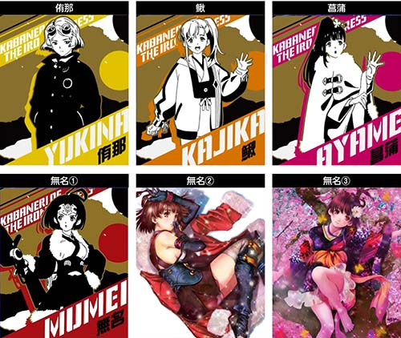
📷 キリ番演出（末尾ゲーム数PUSHキャラ示唆）| 出現キャラ | 海門レベル示唆内容 |
|---|---|
| 桜の無名 | Lv.6 または Lv.7 濃厚（Lv.7期待大） |
| 寝転び無名 | Lv.5 以上濃厚 ＋ Lv.7 期待大 |
| 菖蒲（紫） | Lv.2, 3, 4, 7 期待度アップ |
| 無名（赤） | Lv.1 または Lv.4 期待度アップ |
| 鰍（橙） | Lv.2 または Lv.5 期待度アップ |
| 侑那（黄） | Lv.3 または Lv.6 期待度アップ |
※海門レベル6は期待度約89%、レベル7は100%（周期天井到達）です。
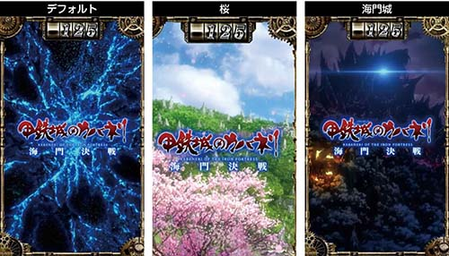
📷 サブ液晶背景（青・桜・海門城夜背景）-
青（デフォルト）基本背景通常
-
桜背景出現から4周期以内の当選濃厚4周期以内
-
海門城（夜背景） 4周期以内濃厚 ＋ ST間天井596G短縮 ＋ 次回STが景之ST以上濃厚！激アツ短縮
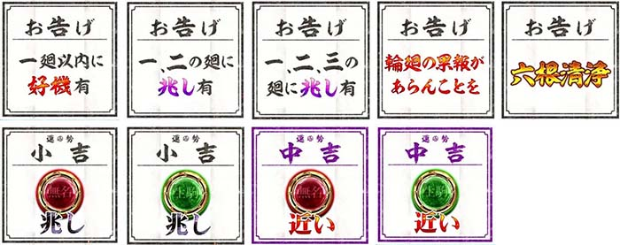
📷 輪廻くじ（海門レベルお告げ文言）| お告げ文言 | 海門レベル示唆内容 |
|---|---|
| 一廻以内に好機有 | 第1周期が 海門Lv.5以上 |
| 二廻以内に好機有 | 第2周期が 海門Lv.5以上 |
| 三廻以内に好機有 | 第3周期が 海門Lv.5以上 |
| 四廻以内に好機有 | 第4周期が 海門Lv.5以上 |
| 一、二、三の廻に兆し有 | 1・2・3周期が全て 海門Lv.4以上 |
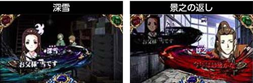
📷 深雪セリフと景之の返答演出（黒煙蓄積示唆）| セリフパターン | 成立役 | 蓄積示唆 |
|---|---|---|
| 深雪のみ | ハズレ | 示唆・小 |
| 深雪のみ | ベル | 示唆・極（大量蓄積濃厚） |
| 景之返答（白文字） | ハズレ | 示唆・強 |
| 景之返答（白文字） | ベル | 示唆・極（大量蓄積濃厚） |
| 景之返答（赤文字） | 全役 | 示唆・極（次回解放激高！） |
※非前兆中での発生に限ります。前兆中は本前兆期待度の示唆に切り替わります。
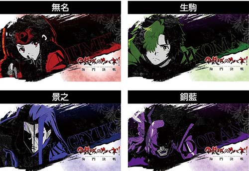
📷 ステージチェンジ時のアイキャッチ示唆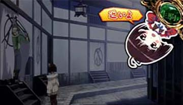
📷 サブ液晶ミニキャラ演出（無名アクション）| 演出 | パターン | 示唆内容 |
|---|---|---|
| アイキャッチ | 無名（赤背景） | 無名CZ 規定ポイント近 |
| アイキャッチ | 生駒（緑背景） | 生駒CZ 規定ポイント近 |
| アイキャッチ | 景之（紫背景） | 周期到達（皮膜ブレイク）近 |
| アイキャッチ | 銅藍（紫暗背景） | 銅藍CZ 潜伏濃厚 |
| ミニキャラ | 無名ランプ上「近いよ」（赤文字） | CZ本前兆または規定pt到達間近 |
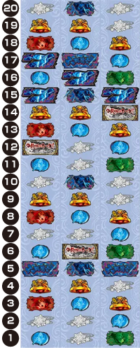
📷 リール配列図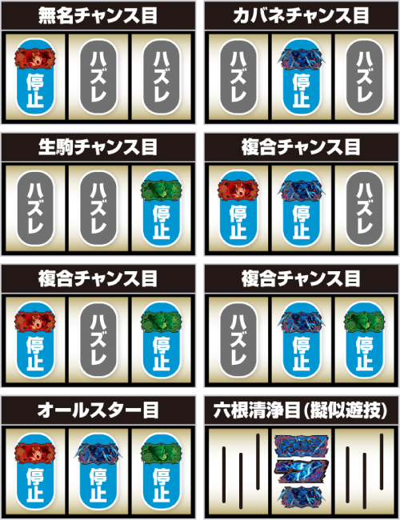
📷 レア役の停止形一覧基本の打ち方（フリー打ち推奨）
※演出発生時は下記の「青7サンド目狙い」を行うと小役やチャンス目を素早く見抜けます。
青7サンド目狙い（ST中・演出発生時）
・枠内にサンド目停止: 中段リプレイ or チャンス目
・中段に青7(上)停止: 右上がりリプレイ or チャンス目
・中段にブランク停止: ハズレ or ベル or チャンス目
順ハサミ打ちの2確法則
ST最終ゲームや「復讐の焔」最終ゲームなど、チャンス目が激アツな場面で爽快感を味わえます。
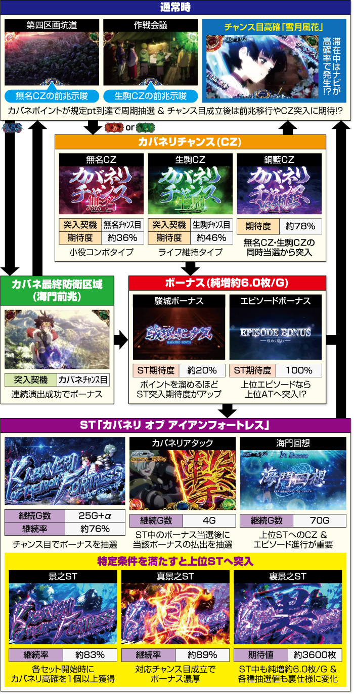
📷 全体ゲームフロー図
通常時は「カバネポイントによる周期抽選」と「チャンス目によるCZ抽選」の2軸で初当りを目指します。
1周期＝最大150G、2周期＝最大300G（ポイント獲得で短縮あり）。皮膜レベル（1〜7）を上げていき、最終防衛区域や連続演出でボーナスをジャッジします。
| 状況 | 減算pt | 液晶演出 | 低設定(設定1) | 高設定(設定6) |
|---|---|---|---|---|
| 通常中 単独チャンス目 | 1 pt | 非発光 | 約 86〜88% | 約 78〜80% |
| 15 pt | BET発光 | 約 10.0% | 約 16.0% | |
| 30 pt以上 | BET発光 | 約 2.5% | 約 5.0% (2倍) | |
| 高確中 単独チャンス目 | 15 pt | BET発光 | 約 80.0% | 約 70.0% |
| 30 pt以上 | BET発光 | 約 6.3% | 約 20.0% (3倍超!) |
| 設定区分 | CZ当選までの平均所要pt | 平均BET発光回数 | 所要チャンス目回数 |
|---|---|---|---|
| 低設定（推定1・2） | 約 128 pt（深い） | 平均 8 〜 10 回 | 約 25 〜 30 回 |
| 設定6（高設定） | 約 76 pt（浅い） | 平均 4 〜 6 回 | 約 14 〜 18 回 |
💡 発光回数が少ないのにCZが出てくる台は、高設定の30pt以上大量減算または初期規定pt浅（100pt未満）の可能性大！
① 無名CZ（カバネリチャンス無名）
・期待度: 約 57%
・小役を連続させてカバネを撃破。7撃破以上でボーナス期待度50%超。
・裏ボタン: 突入画面でPUSHボタンを押すと、液晶右上に規定撃破数のヒントが表示される場合あり。
② 生駒CZ（カバネリチャンス生駒）
・期待度: 約 41%
・ライフ制バトル。ハズレ目で被弾抽選、小役で回復＆攻撃。20G完走または敵撃破でボーナス。
③ 銅藍CZ（最上位CZ）
・期待度: 約 80%
・成功時はエピソードボーナス＋次回ST優遇！
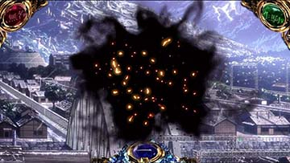
📷 黒煙ポイント獲得・蓄積演出黒煙ポイントがMAX（50pt）に到達すると、ボーナス当選時に「裏海門エピソードボーナス」または「裏景之ST」が発動します。
| 蓄積契機 | 獲得量目安 |
|---|---|
| CZ失敗時 | 1〜5pt |
| 周期前兆失敗時 | 1〜10pt（深雪セリフ等で加算示唆） |
| 通常時の大ハマリ（500G〜） | ゲーム数消化ごとに隠れ加算 |
| ST駆け抜け時 | 大量蓄積のチャンス |
-
エピソードボーナス 払出約150枚 ＋ ST突入濃厚！ST確定
-
駿城ボーナス 純増約6.0枚。消化中にポイントを貯めてST昇格抽選昇格チャレンジ
・継続G数: 25G＋α
・チャンス目成立でカバネリボーナスを抽選。高確状態なら対応チャンス目で期待度大幅UP。
・ボーナス当選時はカバネリアタックで獲得枚数（100枚〜1000枚OVER）を決定。
-
景之ST（上位ST） 純増6.0枚/G ＋ 継続率約85%に大幅パワーアップ！継続率 85%
-
裏・景之ST（最上位ST） 期待値3000枚OVER！復讐の焔成功時の一部などから突入最強特化
確認できた確定示唆や強い演出にチェックを入れてください。